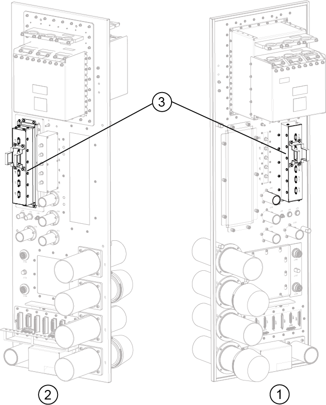
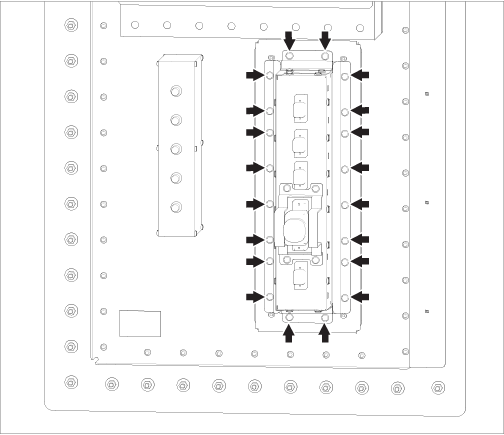
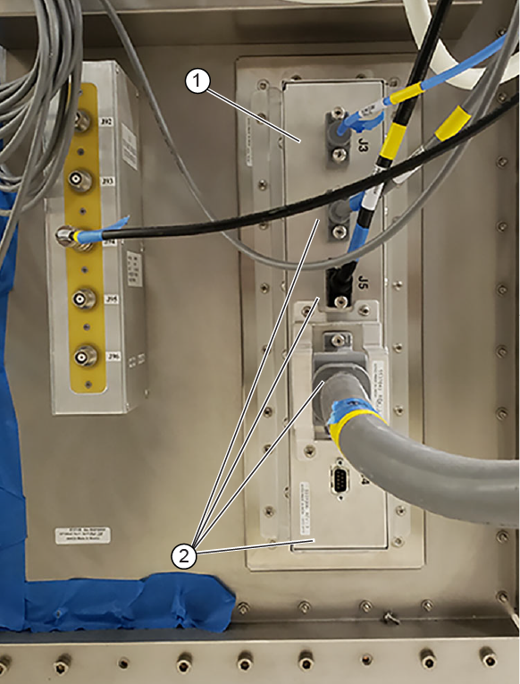
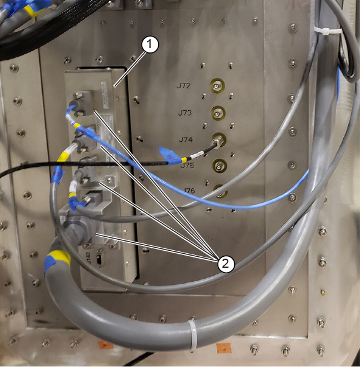

Install the PS filter box in the Integrated System Cabinet (ISC) Penetration Wall (PW).
Prerequisites
| Personnel requirements |
|---|
| Required persons | Preliminary requirements | Procedure | Finalization |
|---|
| 1 | - | 15 minutes | 15 minutes |
| Tools and test equipment |
|---|
| Item | Quantity | Part number | Manufacturer |
|---|
| Nonmagnetic Titanium Service Tool Kit, Small Set | 1 | 5113258 | - |
| Replacement parts |
|---|
| Item | Quantity | Part number | Manufacturer |
|---|
| ISC Penetration Wall Filter Box | 1 | 6859100 | - |
About this task
Figure 1. PP PS filter box location
| 1 | Scan room side |
| 2 | Equipment room side |
| 3 | PS filter box |
Procedure
- From the equipment room side of the Penetration Panel, move the PS filter box into place on the Penetration Panel.
Figure 2.
PP PS filter box screws location
- Secure the PS filter box to the Penetration Panel with 20 screws.
- On the equipment room side, connect each of the PS filter box cables.
Figure 3. Equipment room PS filter box cables
| 1 | PS filter box |
| 2 | PS filter box cables |
- On the scan room side, connect the PS filter box cables.
Figure 4. Scan room PS filter box cables
| 1 | PS filter box |
| 2 | PS filter box cables |